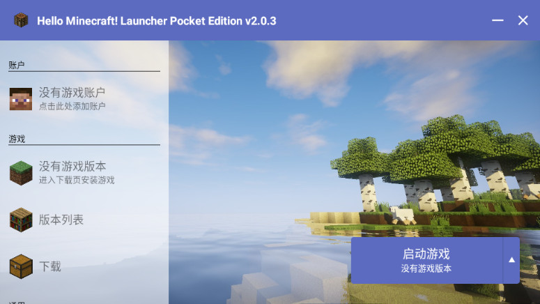

HMCL 十二年：从启动一个游戏到撑起一整条生态
HMCL 桌面版走过的十二年迭代里，版本号稳步推进，但它解决的问题从"能启动"一步步变成"能让整套模组生态在手机上也跑起来"。本文从版本节点回看这条演进线。
现在提到 HMCL，很多人的第一反应是"一个 Minecraft 启动器"——去它的官网扫一眼你就会发现，这说法也太轻了。我最近翻着手上那台老安卓机里还留着的 HMCL-PE v2.0.8，对着样本文档里桌面版 2015 年的最早版本号算了一下，这条线已经跑了十二年。十二年里它从一行命令能拉起游戏就行，走到了能跨平台跨架构覆盖十几种系统、能自动装加载器能导整合包能管账户的一整套生态工具链。
来路：从桌面到安卓，从单体到家族
先说说桌面版的起点。样本文档里给了一个定位：2015 年起由开源社区持续建设。没有什么"第一版 changelog"被单独拎出来讲，早期版本长什么样样本文档没提——这本身可能就是一个信号：最初的几年里，它解决的是一个很朴素的问题——给 Minecraft 玩家一个能方便管理多个版本和多个账户的启动入口。那时候 Forge 刚起步没多久，模组加载器的安装还是手动拖 jar 进文件夹的时代，谁能把这事做自动化，谁就赢了一半。
然后是安卓移植线的出现。样本文档对 HMCL-PE 的描述很清楚：社区开发者 Tungsten 主导，底层借助 Boat、PojavLauncher 等前代项目的成果。它不是从零写一个安卓启动器，而是在已有的 Java-on-Android 技术积累上，把桌面版的界面和能力一层一层搬过来。这件事的难度比听起来大得多——桌面版跑在 JVM 上，安卓上没有原生 JVM，整个运行时都是靠模拟层兜的。样本文档没给安卓移植线的具体版本时间表，但提到了 v2.0.8 是停更前的稳定线，需要安装包的话从下载页面拿就行——说明至少到这个版本号，它已经走完了从"能跑"到"稳定可用"的迭代阶段。

关键转折点：哪些功能憋了好几个版本才来
样本文档里提到的几个设计，在我看来是真正的版本节点，不是随便加的功能：
跨架构支持。 桌面版现在覆盖了 x86、ARM、RISC-V、MIPS、LoongArch——注意这里有 LoongArch，就是国产龙芯的那个架构。能走到这一步，说明团队不是只盯着 Windows 用户，而是认真做了跨平台抽象层。样本文档说"国产平台玩家也用它"，这句话轻描淡写，但背后是多少架构适配的工作量。
加载器自动安装。 Forge、NeoForge、Cleanroom、Fabric、Quilt、LiteLoader、OptiFine——这一串加载器名字能自动装齐，不是一朝一夕的事。每个加载器的安装逻辑不一样、版本兼容矩阵不一样、下载源可能还会变。早期版本里这肯定是个让用户手动操作的环节，能做成一键式，说明团队花了好几个版本迭代维护一个加载器元数据层。
版本隔离与实例管理。 它的hmcl文档里讲游戏目录时提到了公有目录、私有目录、自定义目录，还有开启版本隔离后每个实例的资源独立。这件事在早期启动器里默认是关闭的——所有版本共用同一个 .minecraft 目录，装模组装资源包全堆在一起，多版本混装就污染。把版本隔离从"高级用户才懂的开关"变成默认开启，这个产品决策背后踩过多少坑、收过多少用户反馈，文档里没说，但从现在的默认行为倒推，这是一次很重要的产品方向切换。
整合包导入导出。 样本文档把整合包玩法列成了独立章节，说明这块已经是一级功能。整合包在社区生态里是重灾区——每个整合包作者的目录结构可能不一样、模组版本锁定方式不一样、有的还自带配置补丁。能做到"一键导进来、一键打包出去"，需要团队对社区标准做足调研后再定格式。

迭代规律：团队一直在死磕什么
从这些版本节点往回看，有一条很清晰的主线：HMCL 团队一直在解决"标准化"问题。
加载器安装要标准化——用户不用去每个加载器官网找下载链接看兼容矩阵；游戏目录要标准化——公有私有自定义三种方式覆盖不同场景；实例要标准化——每个版本一套独立环境；整合包要标准化——导入导出有统一格式。
但反过来看，什么东西它没那么在意？界面花哨程度是一个——样本文档里展示的桌面版界面和我几年前用的版本相比，变化不大，还是左侧导航栏 + 右侧主面板的经典布局。多语言支持虽然覆盖了十余种，但样本文档没花多少篇幅在上面，说明这是个加分项不是优先级。还有就是它从来没做过"启动器内商店"——不会推荐模组资源包然后抽成，下载模块是统一下载页，但都是指向社区资源而非商业渠道。
这个定位很有意思：它从一开始就把自己定义成一个"工具"，不是一个"平台"。工具的生死取决于能不能帮用户更快更准地完成事，而不是取决于有没有粘性用户群。
预判：照这个路线，下一步大概率走向哪里
样本文档里有一个没展开但值得留意的地方——安卓线已经停更了。HMCL-PE v2.0.8 是稳定线，后继启动器另行推荐。而桌面版还在持续建设中。这说明团队的资源在收缩，集中到了桌面主力线上。
从迭代规律推的话，接下来几个方向值得关注：
跨架构覆盖可能继续往下走——LoongArch 已经支持了，国产操作系统上的用户规模在增长，这条线值得投入。加载器自动安装的元数据层可能会变得更智能——比如根据已装加载器自动推荐兼容的模组版本。整合包的生态对接可能会更深——现在只是导入导出，下一步可能直接对接社区整合包的发布源，用户在启动器里就能一键拉取。
但我觉得更大的可能性是：它继续保持工具定位，不做平台化。十二年了，团队没走商业化路线，没做应用内购买，没把自己包装成"我的世界玩家社区"。这种克制本身就是一种信号——HMCL 的团队可能从一开始就没想过把它做成一个大产品，只想把它做成一个好用的启动器。
对一款开源工具来说，能坚持十二年把同一个事做扎实，本身就是一种难得的坚持。我手上那台老安卓机里的 HMCL-PE v2.0.8 还能正常跑 1.16.5，桌面版在我这台龙芯笔记本上也能正常启动 Forge——跨越了十几年、跨越了好几种架构，同一个启动器的核心设计没有变过，这比任何 changelog 都更能说明问题。
这套资料我整理了一份，放在GitHub、Gitee、GitCode三个仓库里，考虑到国内网络环境差异和跨平台访问的便利性，三份内容同步维护，从文档说明到实际文件都保持一致，按需取用就行。